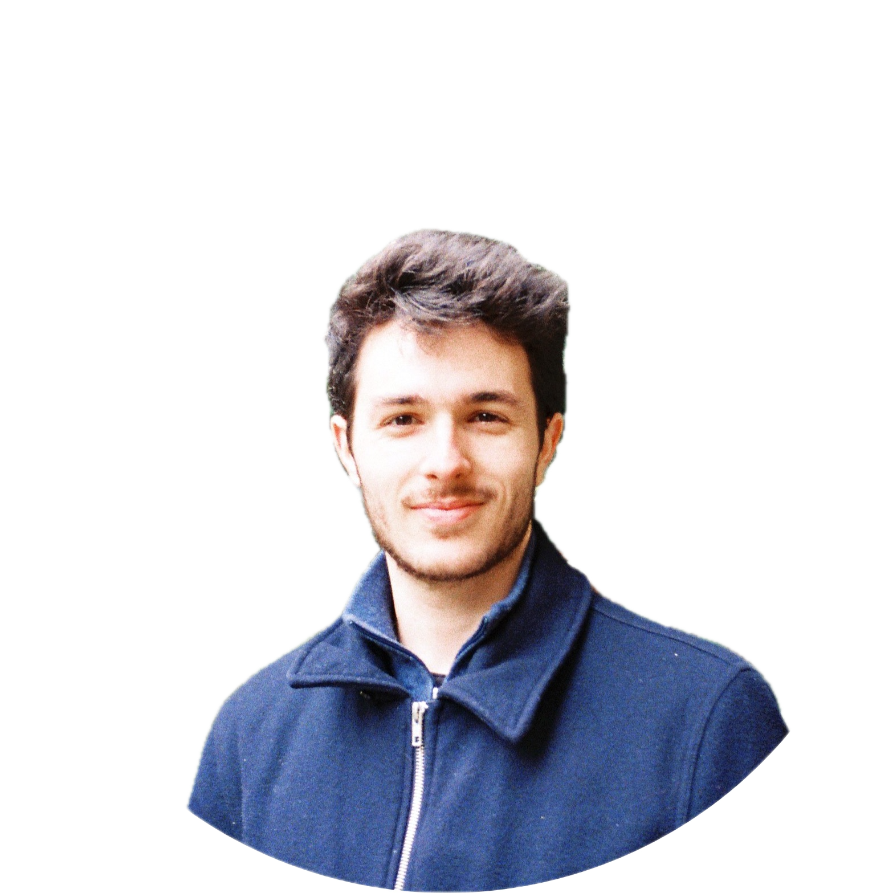

Jean-Marie Lemercier
Applied Scientist · NVIDIA · Berlin
jmlemercier at ieee dot org

About
I am a speech processing and machine learning researcher. I currently work at NVIDIA on diffusion models for speech and language modelling.
I received an MSc in Electrical Engineering from École Polytechnique and an MSc in Communications & Signal Processing from Imperial College London, and a PhD in AI-based Speech Dereverberation from Universität Hamburg in collaboration with Advanced Bionics.
Feel free to reach out for a collaboration or any question related to my work.
Experience
-
May 2025 – present
Applied Scientist — NVIDIA
Berlin, Germany
Diffusion models for speech and language modelling, in the team of Ante Jukić.
-
Jun 2020 – Sep 2023
PhD — Universität Hamburg & Advanced Bionics
Hamburg, Germany
Model-based techniques and diffusion models for speech dereverberation, under the supervision of Prof. Dr.-Ing. Timo Gerkmann. Hybridization of traditional signal processing and neural networks for real-time dereverberation in hearing devices (with Advanced Bionics), and diffusion models for general speech restoration and inverse problems.
-
Sep 2019 – Aug 2020
MSc — Imperial College London
London, United Kingdom
Communications & Signal Processing. MSc thesis on bio-inspired DNN encoders for speech enhancement and separation, supervised by Dr. Dan F. M. Goodman and Prof. Dr.-Ing. Timo Gerkmann.
-
Sep 2016 – Aug 2019
MSc — École Polytechnique (IP Paris)
Palaiseau, France
Ingénieur Polytechnicien programme. Electrical Engineering & Computer Science, with a focus on signal processing, applied mathematics and machine learning.
-
Mar 2019 – Aug 2019
Research intern — IRCAM & Voxline Audio
Paris, France
Electroacoustic study of innovative loudspeaker prototypes: directivity, port-Hamiltonian modelling of the transduction chain, and harmonic-content analysis using homophase signal decomposition.